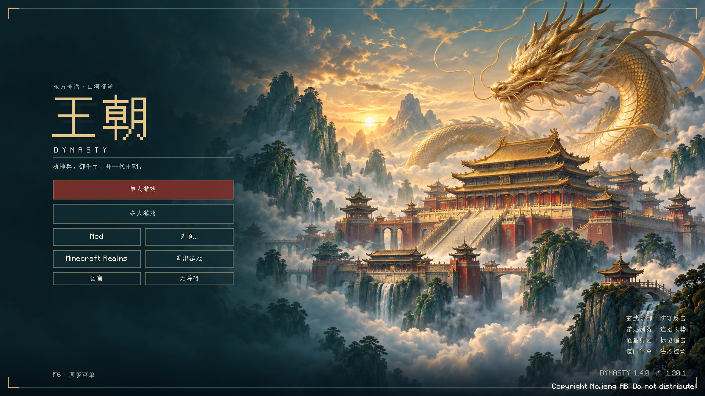
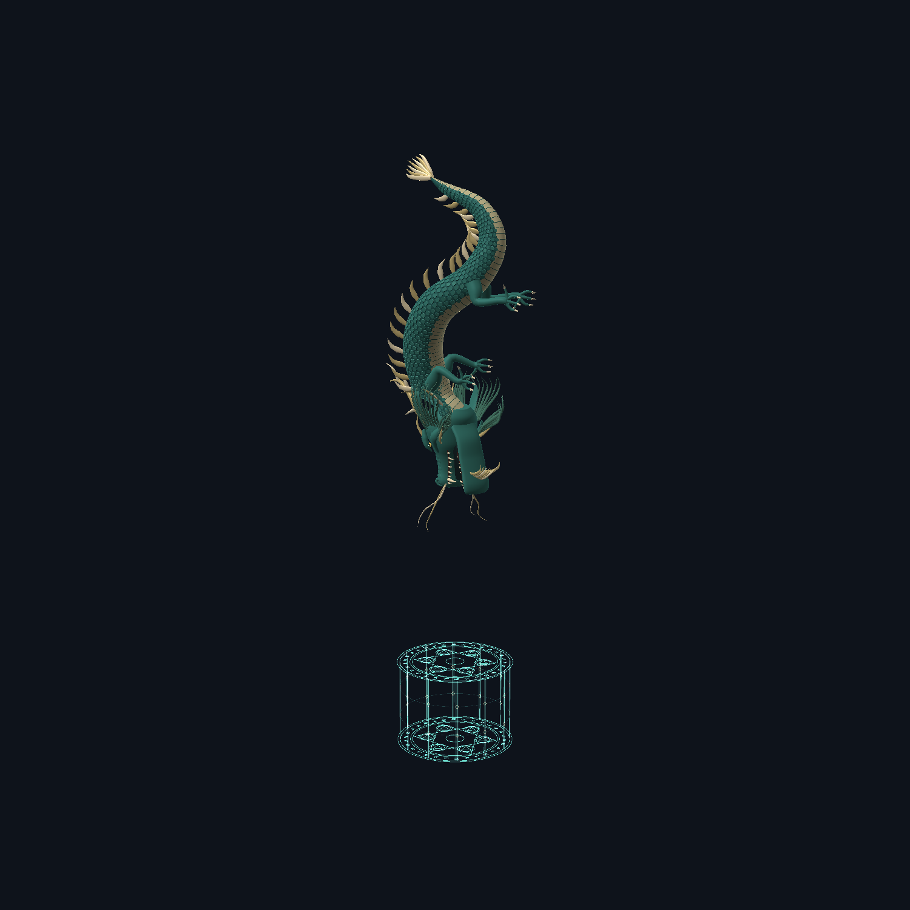

DYNASTY / 四脉新章
同一段王朝路，四种战斗方式
4 件新武器 · 8 件新饰品 · 独立招式试炼 · 主线顺序不变

实际 Minecraft 开发客户端主菜单截图；未进入用户存档。
装备图展示实际打包的 128×128 透明贴图，最长边占 120 像素。不是用一张画替代整套图标；点图可看各自的生成原图。下面的物品格是网页大小预览，不是游戏截图。
玄武守御
接住正面来袭，再以一记反击打出优势。
物品格预览
流派兵器镇岳刀
主手右键举刀，最多守势2秒；正面可格挡伤害减半，结束冷却6秒。成功抵挡敌对生物后，3秒内下一次镇岳刀满力普攻+35%，只存1次。
物品格预览
Curios · 身体镇关镜
佩戴：护甲+4；镇岳刀反击有效期由3秒延长到6秒。
物品格预览
Curios · 手镯虎贲护腕
佩戴：抗击退+0.15；镇岳刀反击击退普通敌人，Boss改为缓慢I 2秒。
游龙剑舞
追踪同一个目标，掌握三击收势的节奏。
物品格预览
流派兵器流云剑
同一敌人连续3次满力普攻，第3击伤害+50%并清空连段；每击间隔不超过3秒。换目标、弱击、换武器会重置。
物品格预览
Curios · 腰带连城剑穗
佩戴：攻速+6%；流云剑连段间隔上限由3秒延长到5秒。
物品格预览
Curios · 项链踏云佩
佩戴：移速+4%；流云剑第3击触发疾风I 2秒。
逐星射艺
满弦留下标记，第二箭精确追击。
物品格预览
流派兵器逐星弓
箭矢基础伤害×2+30；满蓄箭命中标记1名敌人8秒，再次满蓄命中同一目标消耗标记、该箭伤害+40%。换目标则改标记，无穿墙/自动追踪。
物品格预览
Curios · 项链观星坠
佩戴：生命+40；逐星弓标记目标发光3秒，便于跟踪。
物品格预览
Curios · 戒指鸣弦环
佩戴：护甲+3；逐星弓消耗标记时附加缓慢I 2秒，Boss为1秒。
道门律令
择地施令，站定凝神，再把握进攻时机。
物品格预览
流派兵器敕令笔
主手右键敕令：5格内最多8个可见敌对生物缓慢II 3秒，Boss为缓慢I 1秒；冷却8秒。持续按住且站定2秒，获得4秒内下一次满力普攻+50%的蓄势；移动/松手过早取消蓄势。
物品格预览
Curios · 护符司天印
佩戴：生命+40；敕令控场延长2秒，Boss延长1秒。
物品格预览
Curios · 背部定风帛
佩戴：护甲+3；敕令笔站定蓄势期间抗击退+0.5，松手/移动/换手立即结束。
逐星弓 · 三段拉弓
专属弓身、弦与搭弦的箭，拉开后不切回原版木弓贴图。
青龙偃月刀 · 竖直俯冲
攻击龙单独调整头颈姿态，长身竖直、尾巴在上，龙嘴沿法阵中心落下。保留原来1.5倍攻击体型和12格额外起始高度，装饰龙不变。

实际 Minecraft 渲染器离屏帧，非玩家存档中的战斗截图。后羿弓另已移除准心前法阵，脚下结界、虚影和箭上法阵保留。
查看任务书布局预览 · 美术来源与完整提示词